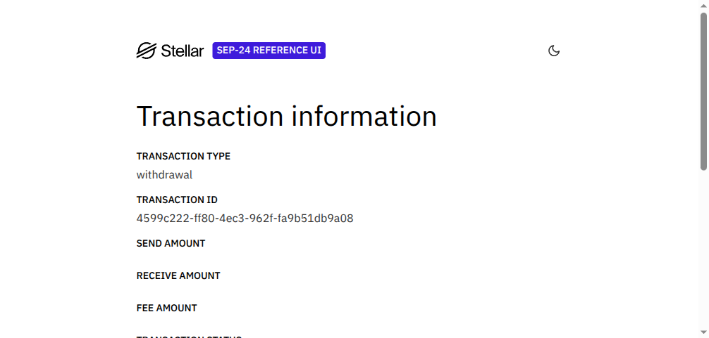

KARMA on Stellar · APAC Stellar Hackathon
A freelancer finishes a job for a client she's never met. She proves her track record clears the bar for the next one — without showing her score, her history, or who she worked for — gets paid in USDC the instant the work is confirmed, and opens a real cash-out toward local currency. No platform sits between them.
Three real mechanisms, in the order a freelancer uses them — not a diagram, a ledger.
A zero-knowledge proof that reputation clears a skill's threshold — without revealing the score, the job history, or the identity behind it. Checked on-chain by native BN254 host functions, not a software fallback.
x402 settles USDC in the same request as the reputation proof — a signed Soroban authorization entry, verified and settled on-chain before the skill ever runs.
SEP-24 — the standard every Stellar wallet and anchor already speaks — opens a real interactive withdrawal against Stellar's own reference test anchor, toward money a freelancer can actually spend.
Real, Horizon-confirmed transactions from pnpm demo:stellar:x402 — a single client-side POST carries both the ZK proof and the x402 payment; the provider stub settles USDC on-chain, then verifies the proof on-chain, before responding.
| Leg | Status | Evidence |
|---|---|---|
| USDC settlement | real | tx 9880020b…5e153c — agent-alpha → agent-t3n, 0.001 USDC, balances confirmed via Horizon |
| ZK proof verification | real | tx 28d4917b…c4e153c — create_job, job_id=2, skill 43 |
Full architecture, both soundness gaps and how they were fixed, and the complete transaction table: DEMO_STELLAR.md · 🎬 watch the narrated ~78s video.
Captured verbatim — pnpm demo:stellar:anchor. Real SEP-1 discovery, real SEP-10 auth, real SEP-24 interactive withdrawal — all against testanchor.stellar.org, the Stellar Development Foundation's own public reference anchor.
$ pnpm exec tsx src/scripts/demo_stellar_anchor_cashout.ts [anchor] fetching SEP-1 stellar.toml from testanchor.stellar.org... [anchor] WEB_AUTH_ENDPOINT = https://testanchor.stellar.org/auth [anchor] TRANSFER_SERVER_SEP0024 = https://testanchor.stellar.org/sep24 [client] agent-alpha (GCW7IISXE4DPFRJVP56V22CYHRGICK6S4JTUL4262MPNWYCQTKTGVW3H) — requesting SEP-10 challenge... [client] signed the challenge with agent-alpha's real Stellar keypair [client] real SEP-10 JWT obtained (session token, not a stub) [client] requesting SEP-24 interactive withdrawal (USDC)... [anchor] interactive withdrawal opened: { type: 'interactive_customer_info_needed', id: '4599c222-ff80-4ec3-962f-fa9b51db9a08' } [anchor] real transaction record: { id: '4599c222-ff80-4ec3-962f-fa9b51db9a08', kind: 'withdrawal', status: 'incomplete', from: 'GCW7II...GVW3H', to: 'GBN4NN...7BXVQF' } [demo] SEP-24 handshake PASS — real anchor, real JWT, real transaction id: 4599c222-ff80-4ec3-962f-fa9b51db9a08

USDC 0.001 ≈ 25 VND · ≈ 400 IDR · ≈ 1.4 PHP — illustrative rate for scale, settlement itself stays in USDC.
Honest scope: the interactive URL opens an anchor-hosted KYC form — built for a human to click
through by SEP-24's own design, a script cannot finish it server-side. What's proven real here
is the full protocol handshake, independently confirmed twice — once via direct API, once by
opening the anchor's own status page in a real browser (screenshot above). One thing found while
testing: the anchor's SEP-10 JWT is short-lived (~10 min) — a production wallet must request a
fresh challenge right before opening the interactive URL. Reproduce it yourself:
KEYSTORE_PASSWORD=<password> pnpm exec tsx src/scripts/demo_stellar_anchor_cashout.ts.
Said plainly, on purpose — a claim we can't back up is worse than no claim.
| Layer | Status | Detail |
|---|---|---|
| ZK reputation gate | real | Groth16/BN254, native Soroban host functions (CAP-0074). Two soundness gaps found in an internal audit, both patched and redeployed, disclosed in DEMO_STELLAR.md. |
| x402 USDC settlement | real | Signed Soroban authorization entry, settled and independently confirmed via Horizon — not a structural stub. |
| Proof + payment, one request | real | No KARMA server in the trust path — the provider stub only routes bytes; the chain verifies everything. |
| SEP-24 anchor handshake | real | SEP-1, SEP-10, SEP-24 request + status poll, confirmed twice (API + a real browser rendering the anchor's own UI). |
| Full local cash-out to fiat | pending | The interactive KYC step is anchor-hosted by design; a production wallet UI around it is the next step. |
| Non-crypto-native onboarding | pending | Today's wallet is an encrypted keystore file. A custodial-lite / social-login wallet in front of it is near-term roadmap, disclosed rather than implied. |